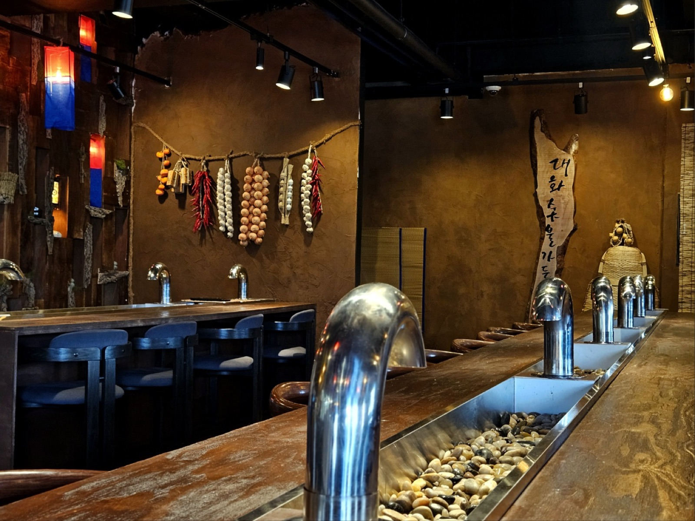
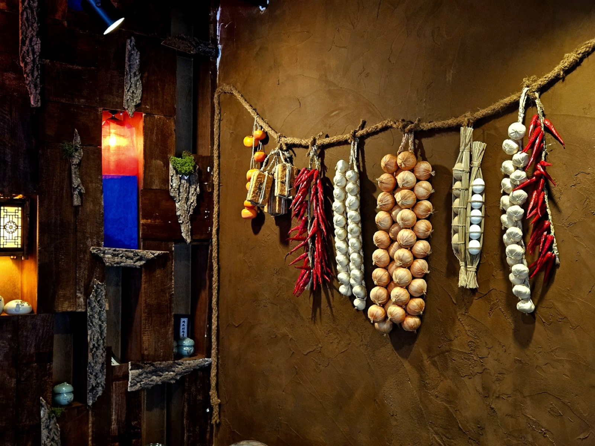
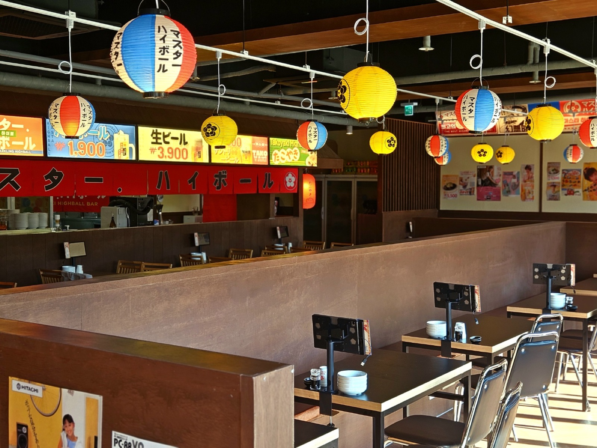
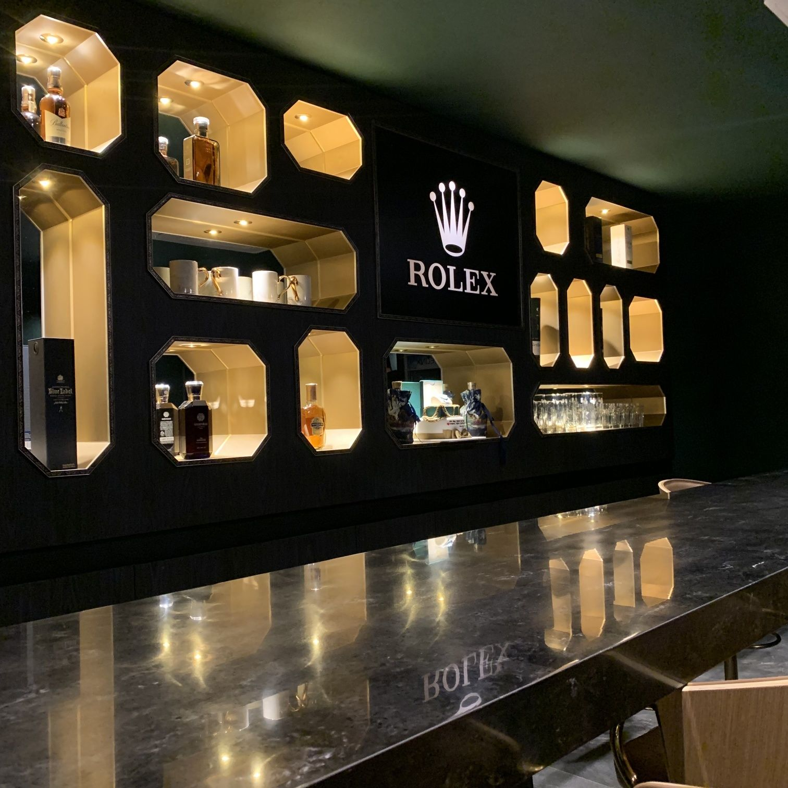
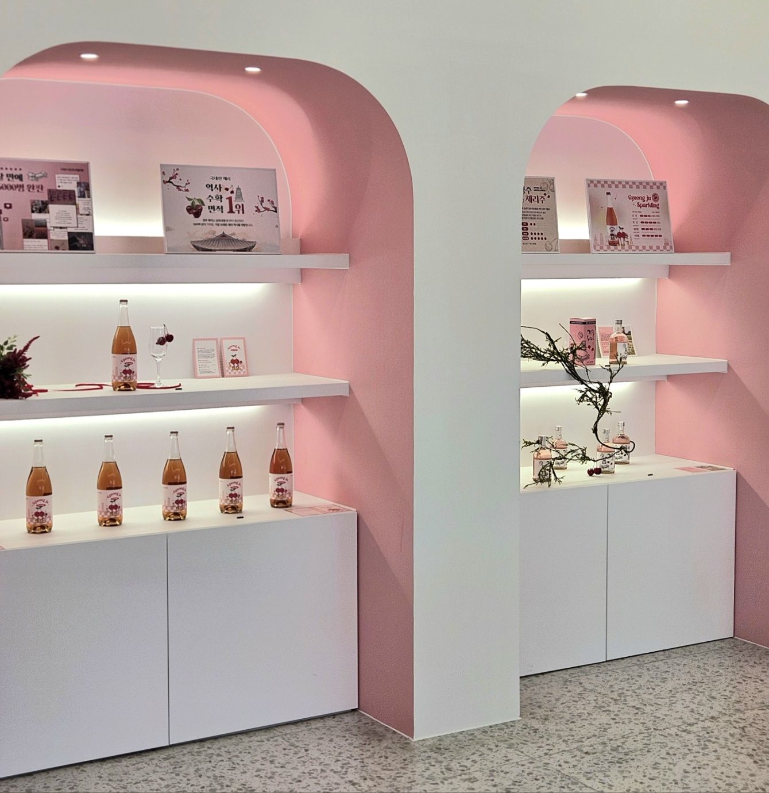
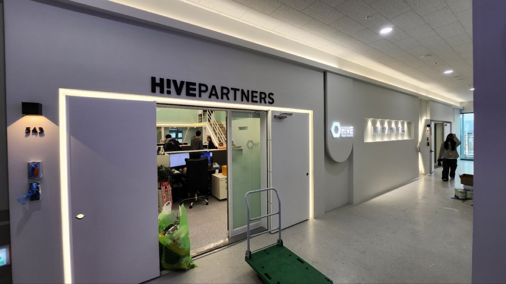

일 년 중 가장 좋은 계절, 10월.
그 온도로 머무는 공간을 짓습니다.
We build in monochrome, light does the color.
덜어낼수록 공간은 선명해진다.
우리는 유행을 시공하지 않는다.
우리는 팔리는 공간에서 배웠다.






공간과 예산, 업의 사정을 먼저 듣습니다. 견적은 들은 만큼 정확해집니다.
말이 아니라 도면과 견적으로 답합니다. 시공 전에 완성이 보여야 합니다.
현장을 끝까지 지킵니다. 마감의 밀도가 곧 공간의 밀도입니다.
상담에서 마감까지, 시월의 현장은 사람이 바뀌지 않습니다. 팔리는 상업 공간에서 검증한 밀도를, 머무는 공간까지 같은 손으로 짓습니다.
공사 규모와 일정만 알려주셔도 됩니다. 하루 안에 답합니다.